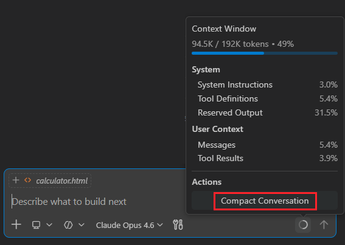
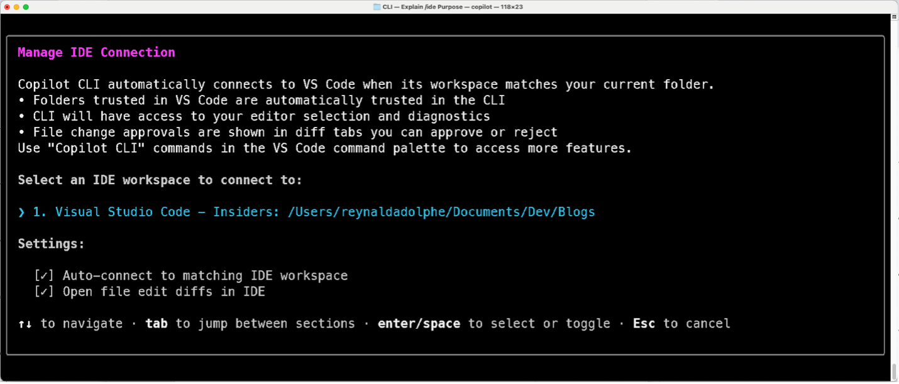

让智能体在实际开发中切实可用
2026 年 3 月 5 日，VS Code 团队，@code
智能体正在承担更复杂、更耗时的开发任务。
通过 2026 年 2 月版本（1.110），我们在 Visual Studio Code 中让这些工作流更加实用，让您能更好地控制智能体的行为方式、集成到工具中的方式，以及跨会话保留项目上下文的方式。
从使用钩子强制执行策略，到在响应中途引导智能体、使用集成浏览器工具验证前端功能，以及将结构化技能直接引入编辑器——此版本专注于让智能体成为实际开发工作中可靠的协作伙伴。
为智能体提供正确的上下文
代码库通常具有复杂的架构和项目结构，且可能包含数千个文件。智能体可能难以保持专注并找到正确的信息，尤其是在会话变得越来越长的情况下。
在此版本中，我们改进了智能体高效处理大容量输出的方式、它们记住手头任务最重要部分的方式，并让您能够控制哪些信息可以被丢弃。
处理大容量输出
如果大型差异、生成的文件或大量日志被视为内联上下文，可能会让会话不堪重负。
智能体和 LLM 擅长处理文件。VS Code 现在通过将大容量输出流式传输到临时文件，并优先向模型提供最相关的信息来管理这些输出。这让智能体能够专注于正确的细节，同时优化上下文使用，而无需额外工作。
从 UI 角度看，聊天对话中的大量工具输出可能会让您难以跟踪会话中发生的整体流程。VS Code 现在将终端输出放入可折叠区域，在您需要时提供详细信息，同时保持会话整洁。
共享智能体记忆
Visual Studio Code 中的智能体使用记忆来保留相关上下文。智能体记忆现在涵盖编码智能体、CLI 工作流和代码审查交互。
无需每次会话都从头开始，智能体可以记住您的偏好，应用之前任务中的经验，并随时间积累关于您代码库的知识。
架构决策、命名约定和之前的重构保留在对话中，因此您可以花更少时间重复说明意图，而更多时间继续推进工作。
压缩长会话
随着对话的扩展，VS Code 会自动压缩较早的历史记录。之前的讨论会被总结，关键决策被保留，为正在进行的工作腾出空间。
此前，您无法控制上下文压缩何时发生，以及压缩后哪些信息被保留。也许您讨论了几种实现方案，只有其中一种对后续工作很重要。
现在，您可以通过输入 /compact 手动运行会话的上下文压缩。在这样做时，您可以为智能体指定要保留或丢弃哪些信息。
特别是在处理长时间运行的会话并涉及大量上下文时，控制压缩可以让智能体专注于关键信息。

智能体控制
随着智能体承担更多责任，您与它们交互的方式与其生成结果同样重要。这些更新使您能更轻松地在活跃工作中控制对话并引导结果。
在智能体工作时进行引导
智能体有时会走上错误的道路，即使在其完成请求之前，这一点也往往一目了然。
此前，您必须等待响应完成后才能引导它转向不同的方向。现在，您可以在智能体生成响应时介入干预，在不重新开始或丢失上下文的情况下引导工作方向。
如果您想到了智能体应该执行的一些额外任务，现在可以排入后续请求，让智能体在完成当前任务后执行。如果您排入了多个请求，可以轻松调整它们的执行顺序。
例如，您可以明确要求：
- 只修改此组件
- 复用现有工具
- 避免更改后端 API
更少的无效编辑、更短的反馈循环，以及保持正轨的对话。
在我们的应用中，当引入新的样式指导以金色点缀和闪光效果增强英雄卡片时，智能体会重新审视现有 CSS 并在不重新开始会话的情况下继续实现。
探索替代方案而不丢失上下文
解决问题通常有多种方式，也可能有多种设计选项。您可以为每种方案创建多个聊天会话，但这意味着您需要复制现有的上下文和对话历史。
为了让这种体验更便捷，您现在可以分叉聊天会话。这会创建一个新的独立会话，继承原始会话的对话历史。分叉的会话与原始会话完全独立，因此一个会话中的更改不会影响另一个。
您可以输入 /fork，它将复制整个对话，也可以使用特定检查点的分叉按钮，_分叉_ 该时间点之前的对话。
在下面的演示中，/fork 创建了一个并行线程，在其中探索了更简约的设计方向，而不影响原始讨论。
通过钩子实现自动化
团队经常依赖约定、验证或自动检查来保持一致性。
钩子在关键生命周期事件中确定性执行，允许团队强制执行策略并设置护栏，使智能体驱动的更改符合项目标准，而不是依赖重复的提示。
例如，团队可以在编辑应用前自动检查代码规范、阻止对受保护配置文件的更改，或在智能体修改应用逻辑时触发测试套件。
这让智能体驱动的更改符合项目标准，而无需持续监督。
以下演示展示了一个在会话退出时执行的停止钩子，它检测到未提交的更改并自动提交和推送。
智能体可扩展性
当智能体能自然地集成到您已有的工具和工作流中时，它们是最有用的。这些更新引入了更丰富的智能体体验来闭合开发循环，同时技能提供了可按需调用的可复用构建块。
在需要时运行智能体技能
许多开发任务会在各会话间重复出现。
编写测试、重构代码或审查更改通常遵循您已经理解的模式。
无需每次都重新编写指令，您可以使用斜杠命令直接从聊天中调用智能体技能。技能可以来自内置功能、扩展或项目特定的工具。
您不必含糊地发出提示，而是可以有意识地调用工作流。
例如：
/tests生成验证测试/explain解释不熟悉的代码/fix定位特定错误
默认情况下，可用的技能显示在 / 菜单中，使其易于发现并在各会话间复用。
以下视频演示了一个前端设计技能端到端地驱动工作流，实现一个新的 UI 组件，集成实时数据，并在不离开 VS Code 的情况下验证结果。
无需离开编辑器即可验证更改
智能体已经能够有效地生成和运行单元测试来验证非 UI 代码更改。
然而，验证前端行为通常依赖手动测试或手动截图比对。
通过浏览器智能体工具，智能体现在可以直接在 VS Code 内的集成浏览器中打开并与应用程序交互。
这让智能体能够实现 UI 更改、加载正在运行的应用程序、检查结果，并在某些情况未按预期行为时调整代码。
实现、检查和验证现在在同一个工作流中进行，帮助您快速迭代而不离开编辑器。
在下面的示例中，集成浏览器打开并跟随页面导航，因此您可以在与应用程序交互时验证更改。
跨工具的工作流集成
开发经常在终端和编辑器之间切换。
这就是 Copilot CLI 现在集成到 VS Code 中的原因，其原生支持包括差异选项卡、受信任文件夹同步以及右键发送代码片段。您可以通过运行 /ide 来管理连接。
CLI 和编辑器保持一致，随着工作推进共享上下文。
实际使用中：
- CLI 进程生成更改
- VS Code 以差异形式展示它们
- 您直接在编辑器中审查和批准修改

VS Code 中智能体的下一步
智能体正在成为日常开发中自然的一部分。您不必围绕它们调整工作流——它们应该适应您的构建方式。
通过 2026 年 2 月版本（1.110），VS Code 让您更好地控制智能体的行为方式。它们更自然地融入您的工具，并跨会话携带上下文。
我们正在以公开透明的方式构建这一切。如果您有反馈、想法或遇到问题，请在 VS Code 仓库中发起讨论或提交问题，或通过社交媒体找到我们。我们很乐意听取您的意见。
想了解这些功能如何增强您的开发工作流吗？
请加入我们于太平洋标准时间 3 月 19 日上午 8 点举行的 VS Code 版本发布直播。开启通知！
祝您编码愉快！💙